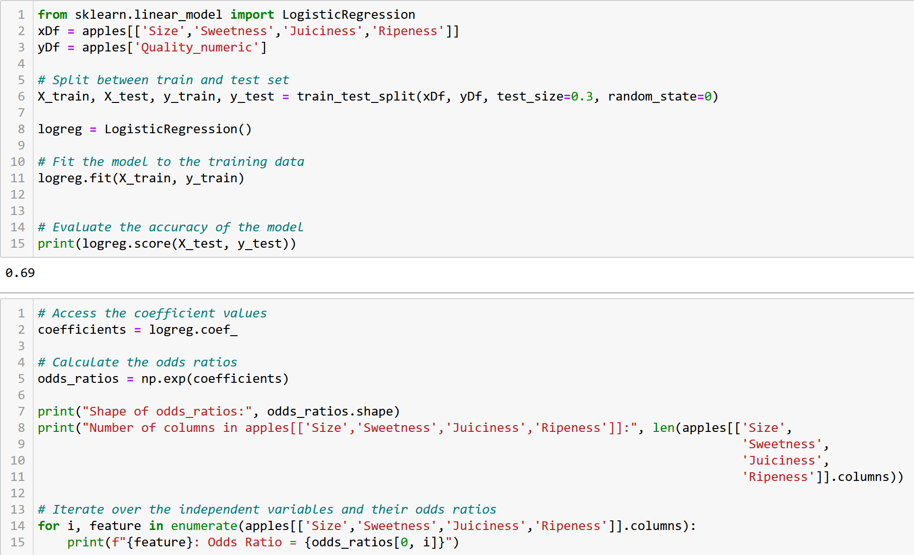

During the last two semesters at Dublin City University, I pursued a specialization in Data Analytics, concurrently engaging in modules encompassing Entrepreneurship, Strategy, and Business Ethics. The proficiencies cultivated within my major, encompassing proficiency in Python, SQL, Data Mining, and Data & Workflow Management, were not confined solely to the context of Data Analytics; rather, I successfully applied them in diverse projects spanning other academic modules. These acquired skills contributed comprehensively to my cognitive framework, fostering a more nuanced comprehension of data, and significantly enhancing my efficacy in the realm of data analysis. Subsequently, within the ensuing section of this portfolio titled "University Project," a succinct overview of select projects is presented, elucidating the extent to which the acquired competencies have been applied and propelled the aforementioned projects forward.
In this project, I embarked on an ambitious journey to explore and analyze demographic and personality data through a series of meticulous data preprocessing and analysis steps using Python. The project's scope aimed at normalizing and imputing missing values within a demographics dataset comprising 122 rows and 16 columns, followed by merging it with a personality dataset to perform a unified dataset analysis, yielding insights into correlations, personality differences, and genetic traits.
The initial phase involved data normalization and imputation where I utilized Python's Pandas library to handle missing values across various columns such as daily travel to Dublin City University, CAO Points, average Year 1 exam results, seat row, and age. Notable techniques included partitioning the dataset to avoid imputation based on previously imputed data, employing mean substitution for daily travel distances, and utilizing linear regression models to estimate missing CAO Points and exam results. A median substitution was chosen for the missing age value, reflecting the dataset's distribution more accurately.
Linear Regression Code

Upon merging the demographics dataset with the personality dataset, challenges such as duplicate phone numbers and low match rates necessitated careful data management strategies, including the use of inner and outer joins to ensure a comprehensive dataset for analysis.
T-Test Code
Dataset Join
The analysis of the unified dataset revealed interesting findings. Correlation assessments, linear regression models, and hypothesis testing illuminated relationships between height, weight, shoe size, and personality traits across genders and star signs. Notably, gender-based personality differences showed no significant disparities, while star sign comparisons revealed that Geminis are, on average, more thoughtful than Sagittarians, and Sagittarians are more assertive than Virgos. Additionally, an exploration into the genetic link between hair and eye color through label encoding and linear regression provided limited insights, suggesting a minimal relationship between these traits.
In conclusion, despite the fabricated nature of the data and the challenges it posed, such as low correlations and the complexity of drawing meaningful insights, the project successfully demonstrated the application of diverse data preprocessing and analysis techniques. It highlighted the importance of rigorous data management and provided a nuanced understanding of personality traits across different demographics. The findings, particularly regarding personality differences by star signs, offer a glimpse into the potential of data analytics to uncover hidden patterns and relationships within complex datasets, even when the data may not be entirely authentic.
This project delved into analyzing apple quality through advanced data analytics, targeting the categorization of apples and predicting their quality. Initially, the data was prepared by loading it from a "Apple Quality" dataset, which involved cleaning by removing irrelevant entries and columns not needed for analysis, such as the apple identifier. This step was crucial for ensuring the data's quality before any further analysis.
With a pristine dataset, the project then moved towards exploratory data analysis (EDA), employing a combination of statistical techniques and visualization tools to uncover patterns, trends, and relationships within the data. This phase was instrumental in identifying the key features that influence apple quality, providing valuable insights that informed the selection of appropriate ML models for further analysis.
Visualization of Data Distribution
Outlier Detection Visualization
Variables Correlation Matrix
The core of the analytical phase involved the application of the K-means clustering algorithm, a popular method for identifying groups or clusters within a dataset based on similarity measures. In this context, K-means was employed to segment the apples into distinct varieties, based on their quality attributes. This unsupervised learning approach allowed for the discovery of natural groupings in the data, highlighting the diversity of apple characteristics across different varieties.
Linear Regression Code
K-Mean Cluster ALgorithm Code
Further, logistic regression was utilized to predict the quality of apples based on a set of input features. This model was chosen for its ability to handle binary classification tasks, making it well-suited for determining whether an apple met a predefined quality standard. The performance of the logistic regression model was meticulously evaluated, with accuracy serving as the primary metric for assessing its predictive capability.
Logistic Regression Code

Visualization of Cluster Distribution on Variables Juiciness and Sweetness
T-Test Code
The conclusion of this analytical journey revealed significant insights into the factors influencing apple quality and the relationship between different apple varieties. The successful application of K-means clustering elucidated the distinct categories of apples present in the dataset, while logistic regression provided a robust framework for predicting apple quality with commendable accuracy. In summary, this project demonstrated the power of ML in agricultural data analytics.
Revenue Controlling - Pharmaceutical Company
In this Excel project for a mid-sized pharmaceutical company in Germany, a sophisticated revenue controlling mechanism was developed to enhance strategic planning and decision-making. The project centered on creating detailed sales plans for each sales territory, categorized into domestic, European, and overseas markets. Utilizing advanced Excel features such as pivot tables, the process involved generating sales statistics by territory and material group, allowing for dynamic sales forecasting and visualization. Sales plans were dynamically updated based on growth percentages, facilitating responsive planning adaptable to market changes. The final consolidation integrated individual territory plans into a comprehensive sales strategy, effectively utilizing Excel to improve business analytics and revenue management in a complex industry.
Value Calculation of Strategic Initiatives for Deezer
In a strategic project for Deezer, a music streaming service, the aim was to drive growth and differentiate in the market. The initiative included a detailed analysis to project costs, revenue, and financial value up to 2030, visualized with graphs such as line and bar charts. The analysis identified key challenges not just in profitability but in how Deezer communicated its unique value, noting inefficiencies in marketing and app interface design. The proposed strategy focused on expanding market penetration by targeting demographic groups like Generation X and Baby Boomers in key markets, and extending reach in Middle and South Africa as well as the MENA regions, where untapped potential was identified. Recommendations for Deezer included improving customer-centricity by enhancing app functionality, revising pricing, and launching targeted marketing campaigns. The financial projections indicated significant potential gains in market share and financial value by 2030, facilitated by Excel’s forecasting and graphing tools which played a pivotal role in strategizing and visualizing the outcomes. This approach not only streamlined analyses but also underpinned strategic decision-making for Deezer.
Analysis of Economics & Well-Being Indicators in OECD Countries
Project in Power BI
The Power BI project aimed at exploring and visualizing a wide range of indicators across OECD countries, focusing on economic, employment, education, and quality of life metrics. This comprehensive analysis utilized Power BI's advanced features for dynamic reporting and interactive visualization, fostering a deeper understanding of the datasets involved and extracting meaningful conclusions from the extensive data.
Dataset Selection
The project revolved around a carefully selected dataset provided by the OECD (Organization for Economic Co-operation and Development), which was chosen for its broad spectrum of societal well-being aspects. This dataset covered 34 critical economic and well-being indicators, offering a comparative view across OECD countries. The data, structured and cleaned for analysis, included metrics on housing quality and affordability, income and wealth, employment and job security, health and well-being, safety and leisure, and work-life balance.
Activities and Analysis
The analysis embarked on dissecting the selected dataset through Power BI's built-in statistical functions, aiming at uncovering data relationships and trends. The project leveraged Power BI dashboards for multivariate analysis visualizations and designed interactive reports. This enabled an in-depth exploration of the dataset, focusing on three main areas: economic indicators, employment and education metrics, and quality of life factors. The project undertook basic feature engineering and reviewed dataset metadata to align indicators with the research interests. Through meticulous data analysis, it dissected the dataset to extract significant findings, focusing on the correlation between various life quality indicators and personal earnings, life expectancy, and the overall economic status of the countries.
Outputs and Insights
The outputs of the project included a series of Power BI dashboards and reports that provided an interactive overview of key OECD economic indicators and a detailed comparison of various economic, employment, and education indicators across OECD countries. These visualizations highlighted trends, outliers, and correlations, offering insights into the factors influencing life expectancy, personal earnings, and overall quality of life in OECD nations.
Key findings revealed positive correlations between life expectancy and GDP per capita, as well as the quality of support networks, while negative correlations were observed with factors like homicide rates and dwellings without basic facilities. Additionally, the analysis provided a global perspective on economics and well-being, showcasing how higher personal earnings and better life satisfaction are associated with improved environmental and safety conditions.
Conclusion
This university project effectively demonstrated the power of Power BI in analyzing and visualizing complex datasets, leading to insightful discoveries about the well-being and economic status of OECD countries. By harnessing the capabilities of Power BI, the project offered a comprehensive representation of key data, enabling impactful data-driven decision-making and providing a valuable resource for further academic and policy research. This project is a prime example of how advanced data visualization tools like Power BI can be utilized in academic settings to foster a deeper understanding of global economic and social indicators, contributing significantly to the discourse on societal well-being and economic development.
Predicting Frost Risk for Vineyards
In my endeavor to enhance my Python skills beyond university studies, I engaged in courses and projects through Kubicle, focusing on a specific project for a winery to improve their frost forecasting processes. This project involved sophisticated data handling, where I accessed datasets via URL and HTML in Python and explored a customer dataset stored locally. The main challenge was to merge these datasets through a join operation, effectively synthesizing information. A key feature of the project was implementing Live Data Forecasts by integrating real-time forecasts via an API into the customer dataset, thus improving its utility and relevance. This project demonstrated my ability to manage diverse data sources, merge different datasets, and incorporate live data, significantly enhancing my Python proficiency and real-world application skills in data management and integration.

Cleaning Nutritional Data
In another project aimed at refining my skills from university, I conducted a comprehensive data cleaning project on nutritional data through Kubicle. This involved the assimilation and cleansing of various datasets merged via a union join operation. The project's tasks included converting data types within columns, removing extraneous units from data cells, correcting data ranges, rectifying categorical errors, eliminating null values, and removing duplicate entries. A significant part of the project was the detection and correction of calorie calculation errors, enhancing the dataset's accuracy. These cleaning processes improved the dataset's quality, making it suitable for in-depth analysis and subsequent research. This project not only bolstered my proficiency in data cleaning methodologies but also highlighted the critical role of meticulous data curation in enabling meaningful and accurate analyses.
In the context of the Business Strategy module during the seventh and eighth semesters, a notable project involved the strategic analysis and consultation of a company. Specifically, my group undertook the task of conducting a comprehensive survey aimed at gaining profound insights into the consumer base of music streaming providers. The survey encompassed inquiries regarding participants' demographics and their current status as customers or non-customers of music streaming services.
Upon categorizing participants into non-customers and customers, distinct sets of questions were directed towards each group. For non-customers, the primary focus was on elucidating the reasons underpinning their decision to refrain from utilizing a music streaming platform. Conversely, customers were queried on various aspects, including their preferred platforms, streaming behavior, satisfaction levels, and an assessment of specific features. To execute this survey, Google Forms was initially employed. However, the analysis conducted through Google Forms proved to be insufficient, lacking in depth, and necessitating data cleaning. Consequently, the dataset underwent a meticulous cleaning process and was subjected to a more detailed analysis and visualization using Python.
The Python analysis concentrated on columns where Google Forms did not yield definitive results, particularly those involving free-form fields or open-ended response options. Although not every column underwent detailed analysis in Python, an efficient focus was directed towards pivotal columns. The dataset was initially cleansed by adjusting column headings, eliminating irrelevant columns, and rectifying errors in input, ensuring a coherent dataset for subsequent analysis.
Demographic analyses were performed on all survey participants prior to the creation of two distinct data subsets: one for non-customers and another for customers. Both subsets underwent a re-evaluation of demographics, followed by visualization. Subsequently, non-customer columns were cleared and clustered to elucidate reasons for abstaining from music streaming, alongside alternative preferences. For the customer dataset, a K-Means algorithm was employed to cluster responses to free-form texts on satisfaction and dissatisfaction into five clusters each. This clustering facilitated the exploration of relationships between music streaming platforms and satisfaction or dissatisfaction reasons, visualized through scatterplots. Furthermore, critical insights gleaned from the data were visually presented.
The refined and in-depth results obtained through the Python analysis were crucial in formulating findings and recommendations. The synthesized data analysis was then exported and encapsulated in an Excel file for submission, providing a comprehensive and well-supported strategic analysis and consulting report.
As a crucial component of the New Enterprise Development module, our team embarked on a comprehensive survey exploring the realm of Smart Luggage and the experiences associated with traveling while using such technology. This initiative was driven by the dual purpose of gathering essential data from potential customers for our in-development product and gaining deeper insights into the market landscape.
To execute this endeavor, we crafted an all-encompassing survey deployed through Google Forms. While the platform itself lacked certain functionalities for thorough data cleaning and qualitative evaluation from open-text responses, we took the initiative to refine, process, and visualize the dataset utilizing Python.
The data underwent a meticulous cleaning process, including the exclusion of responses from participants under 18 for compliance reasons. A significant challenge arose from the nature of the survey, where a substantial portion of questions allowed for free-form responses. Consequently, our primary mission became the segmentation of these diverse answers into cohesive clusters for a more insightful analysis and visualization. A paramount objective of our analysis was to explore potential correlations, specifically investigating whether age played a role in determining price sensitivity for our product. Surprisingly, no discernible correlation was found in this respect, challenging initial assumptions.
Through the meticulous cleansing, analysis, and visualization of data using Python, we not only gained valuable insights but also utilized this refined information for the feasibility study of our product. The synthesis of our Python analysis findings was efficiently compiled in Excel, underscoring the pivotal role Python played in making the data actionable for our project. In essence, the success of our analysis owes a significant debt to the power and flexibility afforded by Python in handling complex data sets.
This case study delineates the journey undertaken to assess the feasibility of developing a real-time Twitter sentiment analysis software for Amtagio, a nascent venture in the travel accessories sector. With an emphasis on influencer-led marketing strategies, Amtagio aimed to harness the analytical power of sentiment analysis to gauge public perception of its digital tag product line. The project scrutinized various facets, including technical capabilities, financial implications, and potential return on investment, against a backdrop of a €50,000 budget and an ambitious deployment timeline.
Amtagio's strategic marketing focus hinges on leveraging Twitter for influencer campaigns, necessitating a sophisticated tool to analyze sentiments expressed in real-time. This tool's primary aim was to decode public sentiment, offering immediate feedback on campaign reach and impact. However, the undertaking faced initial uncertainties around budget adequacy, data access challenges, development complexity, and requisite technical infrastructure.
The project was initiated with a dual objective:
• Technical Feasibility: Determine whether existing technologies and open-source tools could be orchestrated to build a robust, real-time Twitter sentiment analysis tool tailored to Amtagio's marketing needs.
• Financial Feasibility: Assess if the allocated budget of €50,000 was sufficient to cover development and operational costs, ensuring a viable return on investment.
The methodology encompassed a comprehensive evaluation of available technologies and development frameworks, with a specific focus on natural language processing (NLP) techniques and cloud computing solutions. The study leveraged the Twitter API for data retrieval, evaluated the BERT model for sentiment analysis, and explored Amazon Web Services (AWS) for scalable cloud infrastructure. A parallel financial analysis was conducted to estimate the total cost of ownership, considering both development and operational expenses.
Findings:
• Technical Evaluation: The project confirmed the technical viability of constructing a sentiment analysis tool utilizing the Twitter API, BERT for NLP tasks, and AWS for cloud infrastructure. It established a roadmap for developing a prototype capable of meeting Amtagio's requirements for real-time data analysis and scalability.
• Financial Analysis: The financial analysis revealed that while the initial development costs fell within the projected budget, ongoing operational expenses, particularly for cloud services and data processing, could exceed the initial allocation. The study suggested avenues for cost optimization and highlighted the importance of strategic financial planning for sustainable project execution.
The feasibility study concluded that while developing a sentiment analysis software for Amtagio is technically feasible and can provide valuable insights into marketing campaign effectiveness, careful consideration of long-term financial sustainability is crucial. The project underscored the need for adaptive budgeting to accommodate evolving technical requirements and operational expenses. It recommended proceeding with the development of a minimum viable product (MVP) to further validate the concept and refine cost estimates.